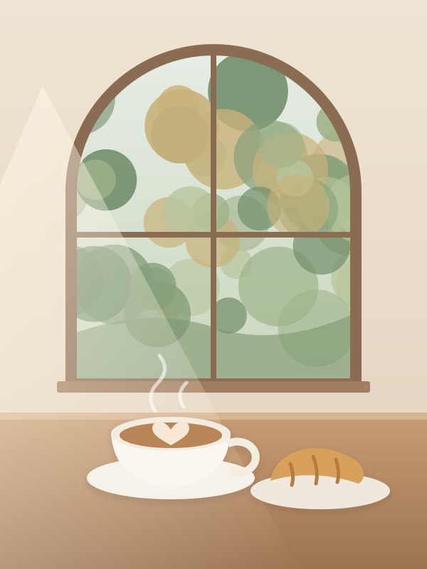
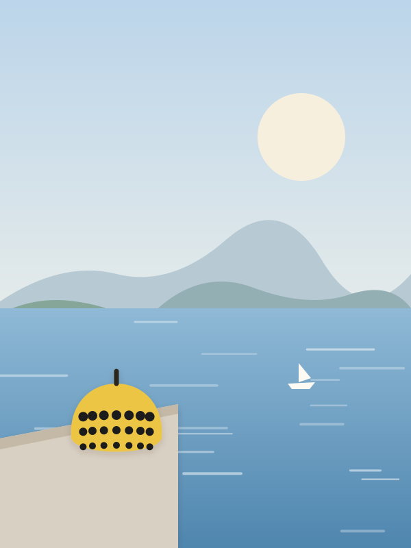
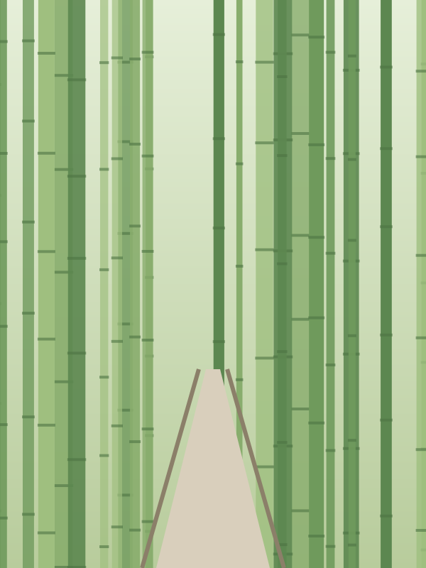
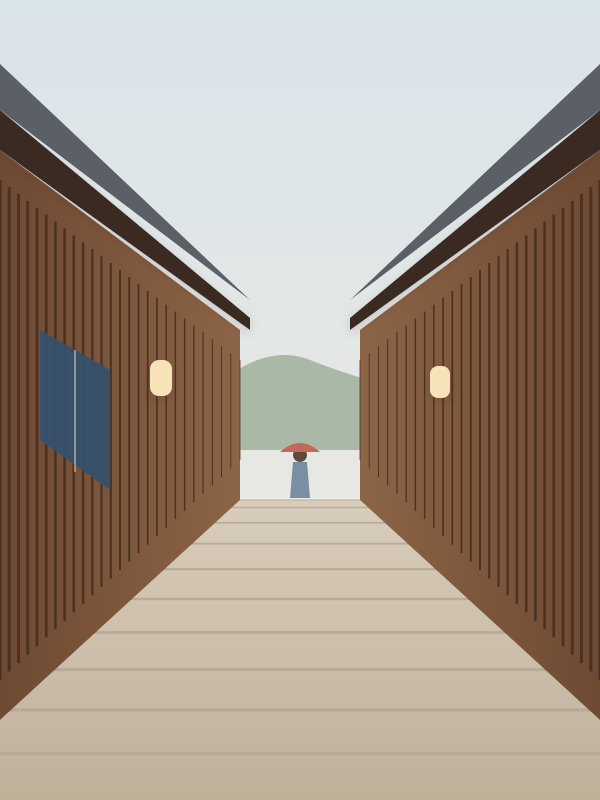
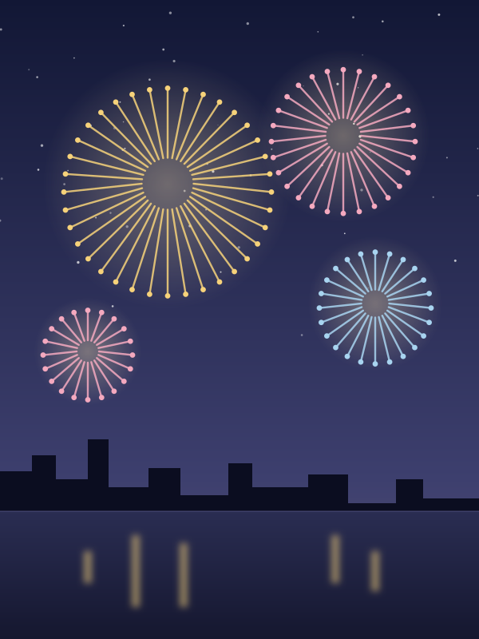
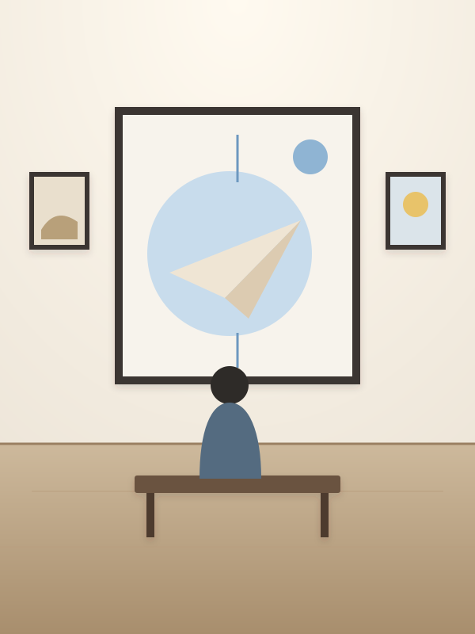

見つけた「行きたい」を、旅にする。
「いつか行きたい」を、 行ける日に変える。
Instagram、Google Maps、Web記事、SNSで見つけた
行きたい場所やイベントをひとつに保存。
地図やカレンダーから再発見して、
次のおでかけや旅行につなげます。
iPhone 向け App Store 公開準備中 広告なし
-

ブルーボトルコーヒー 清澄白河カフェ・東京Instagram -

直島絶景・香川Web記事 -
teamLab Planetsアート・東京X
-

嵐山 竹林の小径絶景・京都Google Maps -

金沢 ひがし茶屋街街歩き・石川Instagram
- 銀座ランチ中央区銀座
- teamLab Planets江東区豊洲
- 東京タワー港区芝公園
-
見つけた瞬間に保存
行きたいを逃さない
-
地図で再発見
近くの保存スポットに気づける
-
カレンダーで予定化
週末や旅行に組み込める
-
イベントもまとめて管理
展示・フェス・グルメも
-
01
見つけたらすぐ保存
Instagram や Google Maps、Web記事、SNS で見つけたスポットやイベントを、共有メニューからワンタップで保存。
-
02
好きなように整理
タグやカテゴリ、「行きたい・行く予定・行った」のステータスで、自分らしく整理。とりあえず保存して、あとから整えられます。
-
03
地図で見つける
旅行先や現在地の近くで、以前保存したスポットを地図上で再発見。「この辺に何か保存してたはず」に応えます。
-
04
カレンダーで計画
会期のある展示やイベントはカレンダーに。「いつか行きたい」を、具体的な日付に変えられます。
How it works
旅は、
こんなふうに。
気になるものとの出会いから、実際の旅の思い出になるまで。Travel Inbox がずっと寄り添います。
-
01
発見
SNS や Web で、気になるスポットやイベントに出会う
-
02
保存
共有メニューから、ワンタップで Travel Inbox へ
-
03
整理
タグやカテゴリで、自分らしく整理する
-
04
再発見
地図やリストで、保存した「行きたい」に再会する
-
05
計画
カレンダーで、週末や旅行の予定に組み込む
-
06
訪問
ついに、その場所へ。「行きたかった」が「行ってよかった」に。
Inspiration
行きたいであふれる、
やさしい世界。
カフェ、絶景、アート、イベント、週末の小さな旅。まだ見ぬ素敵な場所が、あなたを待っています。
-
カフェ
やさしい時間が流れるカフェ京都 -
絶景
いつか見たい、あの絶景瀬戸内 -
アート
心が動くアート体験東京 -
週末旅行
週末で行ける、小さな旅金沢 -
温泉
湯けむりの町で、ひと休み箱根 -

イベント夏の夜空を見上げる、花火大会長岡 -

展示会期中に行きたい、あの展示上野 -
街歩き
坂道と路地をたどる街歩き尾道
Pricing
はじめるのに、
費用はかかりません。
¥0ダウンロード
保存・整理・地図・カレンダーといった基本機能は、無料でお使いいただける予定です。 料金の詳細は、App Store での公開にあわせてお知らせします。
- 広告は表示しません
- 保存した内容を第三者に販売・提供しません
- アカウントとデータはいつでも削除できます
どこから保存できますか？
Instagram、Google Maps、Safari など、共有ボタンのあるアプリから保存できます。共有メニューで Travel Inbox を選ぶだけで、URL からタイトルや画像を読み取ります。読み取れなかった項目は、その場やあとから書き足せます。
Instagram や Google Maps の保存リストを自動で取り込めますか？
現時点では、各サービスの保存リストとの自動同期には対応していません。見つけたその場で共有から保存する仕組みなので、ほかのサービスのアカウント連携は必要ありません。
どの端末で使えますか？
まずは iPhone 向けに App Store での公開を準備しています。公開したら、このページからダウンロードできるようになります。
保存した場所が、ほかの人に見られることはありますか？
ありません。Travel Inbox には公開や共有の機能がなく、保存した内容はあなたにだけ見えます。現在地は近くの保存スポットを探すためだけに端末内で使い、送信も保存もしません。
さあ、次の旅へ。
行きたいで終わらせない。
Travel Inbox で、もっと自由で、
豊かな旅のある毎日を。
App Store 公開準備中